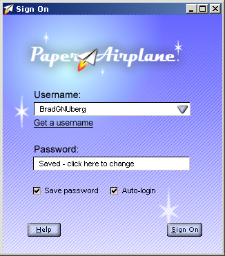
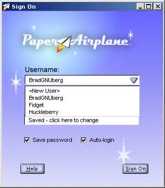
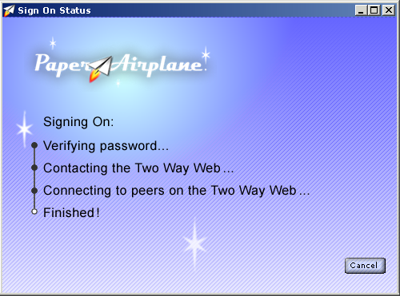

| | |
Table of Contents | Last | Next
Signing In and Out of the Two Way Web
Never again will you have to juggle passwords between web sites. Instead of signing individually into each Two Way Web site, you sign into the Paper Airplane browser itself when you first start:

Sign-On Dialog
As you access each Two Way Web Site, an authentication process occurs that involves sending special keys instead of passwords. This happens transparently and securely.
Paper Airplane also makes it easy to have multiple user accounts to protect the different identies you may have between Two Way Web Sites:

Choose Username Pulldown in Sign-On Dialog
Simply select one of the usernames to sign into the Two Way Web with that identity. When you join or unjoin a particular Two Way Web Site it will be with the identity that you signed in with from this dialog.
To create a new account, select the <New User> identity from the username pull-down. This will start the Registration Wizard, where you can create a new username and password.
You can have Paper Airplane automatically sign you in when you first start the browser by clicking the Auto-login checkbox. You can also have your password saved by checking the Save password checkbox.
Press the Sign On button after entering your username and password to sign onto the Two Way Web. A dialog window will appear showing the status as the Paper Airplane browser attempts to sign on:

Sign-On Status
If a step fails the bubble will fill with red instead of black. Press the Cancel button to abandon the signing on; if pressed you will return to the Sign-On dialog.
Technical Tip: When you enter your password it is never actually sent on to the Internet. Instead, your password is used to unlock a special file on your machine that contains a private key. When you used the Registration Wizard a public key and a private key were given to you. A public key is freely given to other people on the Internet; it is non-private and others can use it to contact and verify information you create. A private key is held only on your machine, and is used so that others can verify your identity. The Paper Airplane browser hides this information from you.
Advanced Tip: If you would like to move your private key to a new machine or back it up in case your hard-drive crashes, use the Windows Explorer to navigate to the directory [insert directory when client is finished] and copy the entire directory [insert username directory when client is finished] to another machine or to a floppy disk; be careful not to place this file on the open Internet where others can copy it! If someone gains access to both your password and this file they can pretend that they are you. On the new machine install Paper Airplane, use Windows Explorer to navigate to the directory [insert directory when client is finished], and copy the directory you backed up earlier to this directory. Restart the Paper Airplane browser.
While browsing the username that you signed in with is displayed in the Account Info and Sign Off Area:
Account Info and Sign Off Area
To sign off press the Sign Off button. The Sign-On dialog will appear. You can now exit Paper Airplane or sign-in with a different username.